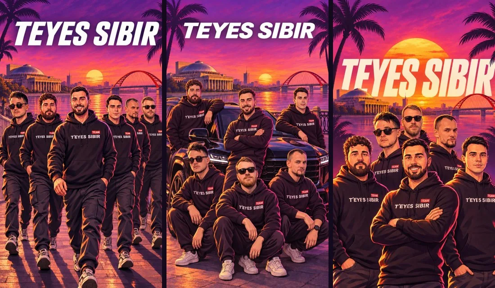
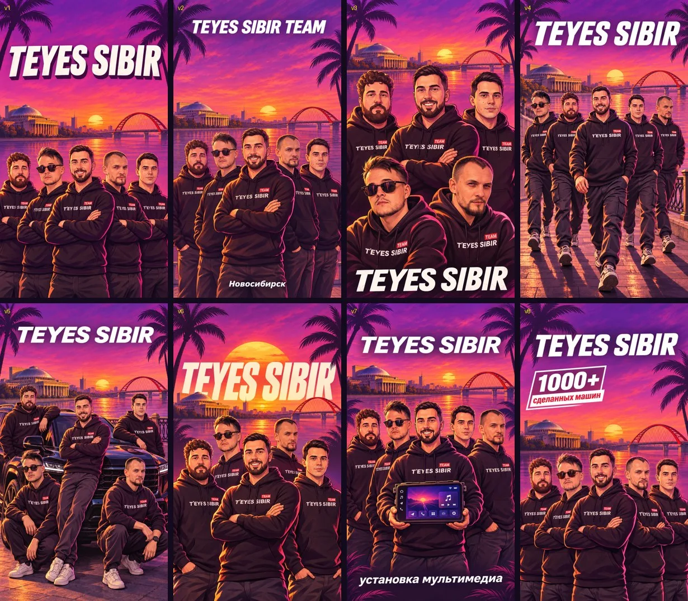
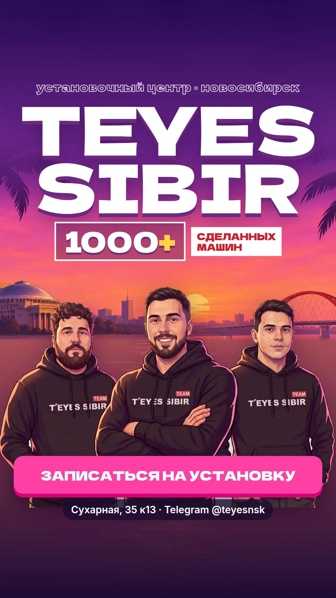
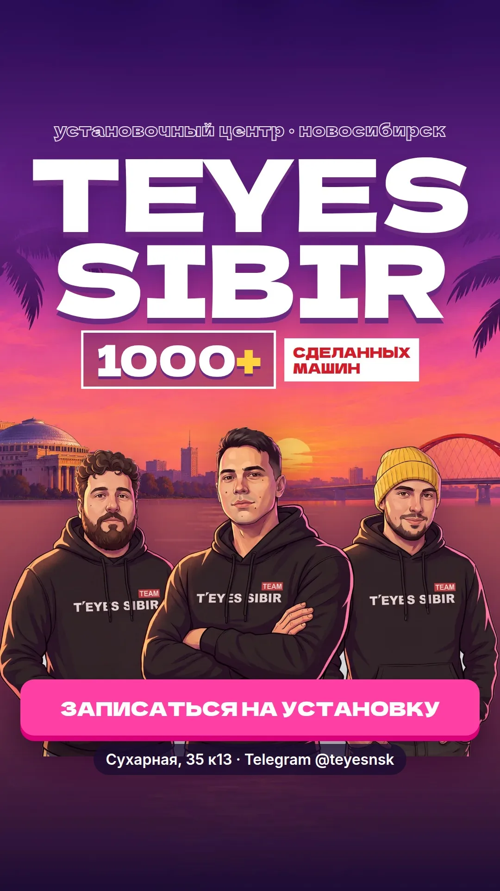
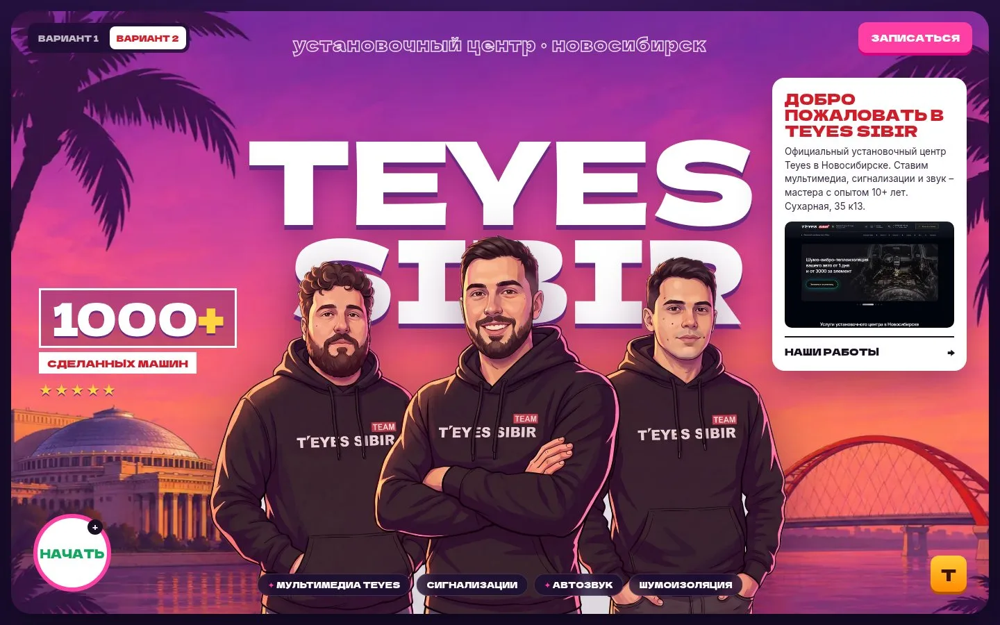
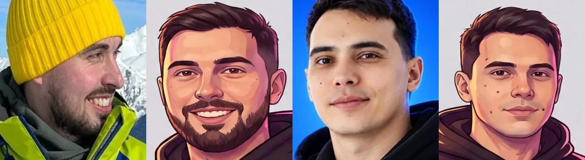
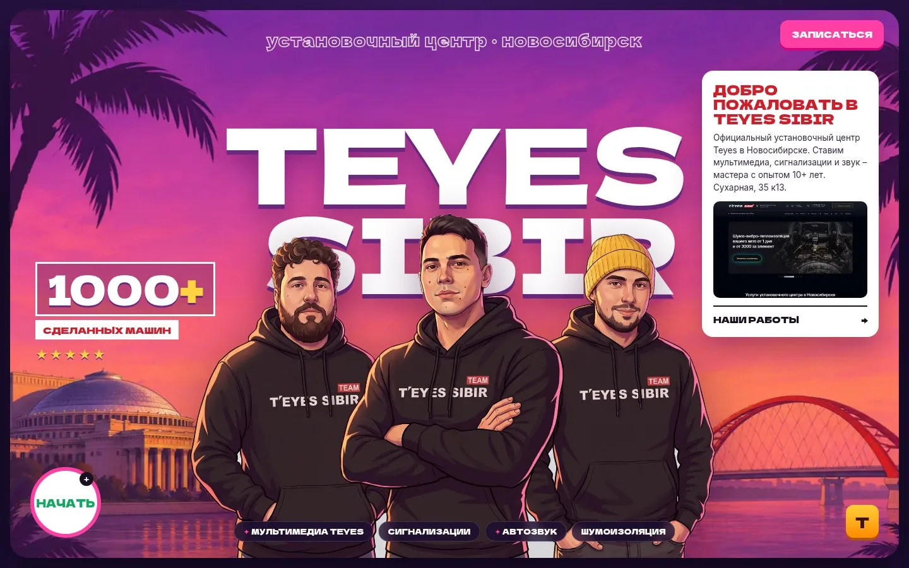
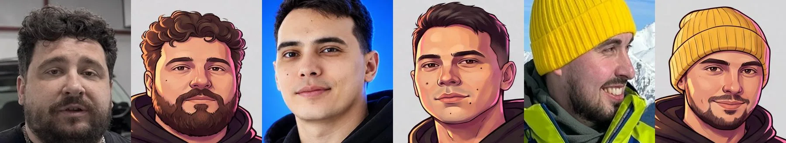
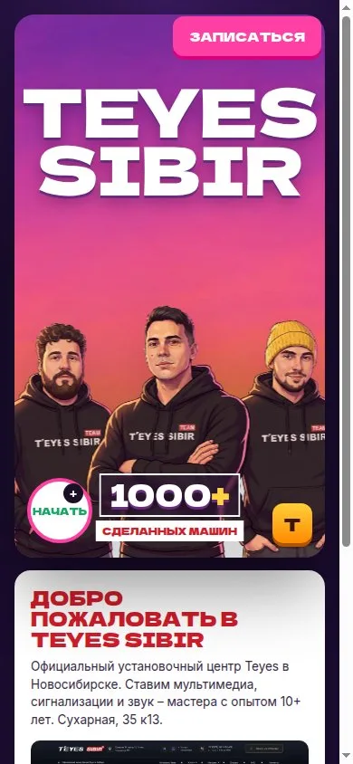

Концепт TEYES Sibir: сторис 4, 5, 6 – уже вшестером
Новое: в сторис 4 («идут»), 5 («у машины») и 6 («солнце») добавлен шестой парень – в тёмных очках, с рыжей бородой. Файлы – Загрузки, teyes-storis/shestero; все сторис одним архивом – teyes-storis-vse.zip.

Пятую дорисовал бесплатный GPT (Codex), потом у него кончился лимит Plus. Четвёртую и шестую – тот же GPT через OpenRouter (openai/gpt-5.4-image-2): 3 вызова, $0,43 ≈ 35 ₽ (в четвёртой первый раз GPT заменил парня в очках вместо добавления – переделал).
Новое: 8 вариантов сторис – мы трое и двое новых парней (в очках и с бородкой). Файлы 1080×1920 – в Загрузках, папка teyes-storis/gpt.

| № | Композиция |
|---|---|
| 1 | Все в ряд, руки скрещены, надпись сверху |
| 2 | Клином, «TEYES SIBIR TEAM», внизу «Новосибирск» |
| 3 | Два ряда крупно, надпись внизу |
| 4 | Идут по набережной |
| 5 | У чёрного внедорожника (без номеров) |
| 6 | Солнце за головами, надпись за спинами |
| 7 | Кирилл держит магнитолу, внизу «установка мультимедиа» |
| 8 | С плашкой «1000+ сделанных машин» |
Цена – 0 ₽: Codex imagegen. Лица – по мотивам фото: узнаются, но не один в один. Третьего парня нет – видео на маке не нашёл; пришли видео или скрин с лицом – добавлю.
Раньше: два варианта экрана и сторис
Сторис 1080×1920 (новое): две штуки – Кирилл в центре и ты в центре. Файлы в Загрузках, папка teyes-storis (PNG и JPG). Живая страница: tema-mail.github.io/artem-portfolio/teyes/story (вариант 1 – с ?v=1).
| Кирилл в центре | Ты в центре |
|---|---|
 |
 |
Сделано бесплатно: картинка команды уже была, вертикальный фон собран кодом из готового фона Новосибирска (небо дорисовано, вода с солнечной дорожкой – кодом), текст и кнопка – вёрсткой, снимок 1080×1920 на claude-vps. Сверху и снизу по 250 px оставлены под интерфейс ВК и Инстаграма.
Вариант 2 (новый): Кирилл в центре без шапки, Артём справа – tema-mail.github.io/artem-portfolio/teyes/v2

Причёску Кирилла дорисовал: фото без шапки нет, взял короткую тёмную стрижку под цвет бороды. Лицо в анфас – тоже по фото в профиль, поэтому сходство примерное. Есть фото Кирилла анфас без шапки – пришли, перерисую точнее.

Вариант 2 стоил ещё $0,28 ≈ 23 ₽ (баланс $4,73 → $4,46). Всего на концепт – около 46 ₽ из 100. Между вариантами – переключатель «Вариант 1 / Вариант 2» вверху страницы.
Вариант 1
Взял первый экран портфолио и переделал под TEYES: вы втроём в толстовках «T'EYES SIBIR TEAM», за окном пальмы и Новосибирск, счётчик «1000+ сделанных машин».
Открыть: tema-mail.github.io/artem-portfolio/teyes

Что поменял по твоим словам
| Просил | Сделано |
|---|---|
| «Портфолио» → TEYES SIBIR | Крупно «TEYES SIBIR» за спинами |
| За окном что-то с Новосибирска | Оперный театр с куполом, красная арка Бугринского моста над Обью и пальмы |
| Кейсы → 1000+ машин | «1000+ сделанных машин» |
| Алексей и Кирилл рядом | Алексей слева, ты в центре, Кирилл справа (в своей жёлтой шапке) |
| Толстовки с надписью TEYES SIBIR Team | Чёрные толстовки, принт как на футболке Алексея: «T'EYES SIBIR» и красная плашка «TEAM» |
Справа карточка «Добро пожаловать в TEYES Sibir» со скрином сайта, кнопки «Записаться» и «Начать» ведут в Telegram @teyesnsk.
Лица сверены с фото
Алексей – с фото у стенда с магнитолами, Кирилл – с фото из ВК (снял через твой Chrome, ВК без входа не отдаёт). Рядом исходник и рисунок:

Кирилл на фото в шапке и в профиль – поэтому оставил шапку, причёску не выдумывал.
Траты: Segmind один вызов, $0,28 ≈ 23 ₽ (баланс $5,01 → $4,73), в лимите 100 ₽. Фон – Codex, бесплатно.
Проверено на живом адресе
- Компьютер 1440 и телефон 390: всё влезает, горизонтальной прокрутки нет.
- На телефоне счётчик перенёс вниз, чтобы не закрывал Алексея.

Нужно от тебя
- Какие из 8 сторис берём (номера) и что поправить; видео или скрин третьего парня.
- Куда дальше: делаем на этом первом экране новую главную teyes-sibir.ru или это для соцсетей и рекламы.
Что раскрыть
- На телефоне Новосибирск почти не виден – экран узкий, видно небо. Можно сделать отдельный кадр под телефон.
- Исходники и промт – в репо tema-mail/artem-portfolio, папка assets/raw/team.